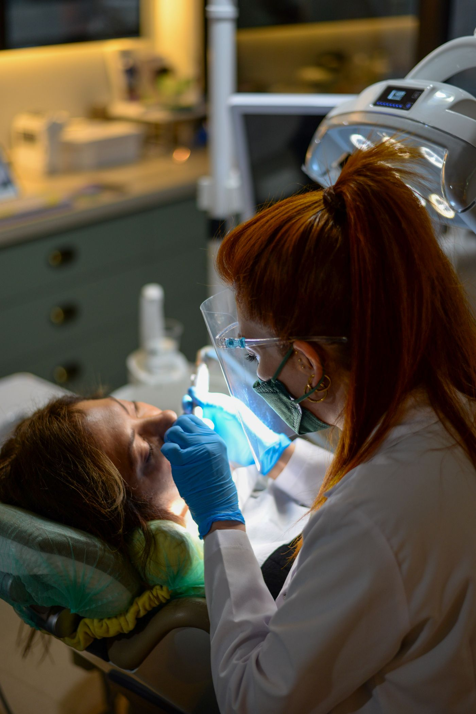

★★★★★
عملت فينير عند الدكتور يزن والنتيجة فاقت كل توقّعاتي — ابتسامة طبيعية وراقية بالضبط مثل ما حلمت فيها. ثقتي بنفسي صارت مختلفة تمامًا.
مريض · خرائط جوجلفي عيادة الدكتور يزن الصمدي، نُحوّل الابتسامة إلى تحفة فنية — فينير وقشور خزفية، ابتسامة هوليوود، وتبييض احترافي بنتائج طبيعية تليق بك. فنٌّ ودقّةٌ في كل تفصيل.

من الفينير الخزفي وابتسامة هوليوود إلى الزراعة والتبييض — نتائج راقية وطبيعية تُصمَّم خصيصًا لملامحك.
نرسم ابتسامتك الجديدة بأبعادٍ متناغمة مع ملامحك قبل أن تبدأ رحلتك.
قشور خزفية فائقة الرقّة لابتسامةٍ متناسقة ولامعة بثباتٍ طويل الأمد.
إطلالةٌ ساحرة بابتسامةٍ بيضاء مثالية تُبرز جمالك وتمنحك ثقةً لا تُقاوم.
تبييض آمن ومتقدّم يمنح أسنانك درجاتٍ أنصع بنتائج فورية في جلسةٍ واحدة.
زراعات ثابتة بأحدث التقنيات لتعويض الأسنان المفقودة بمظهرٍ طبيعي تمامًا.
تيجان وجسور دقيقة تُعيد لابتسامتك وظيفتها وجمالها بأناقةٍ طبيعية.
حشوات بلون السن غير مرئية تُرمّم الأسنان وتحافظ على المظهر الطبيعي.
متابعة دورية لطيفة تحافظ على إشراق ابتسامتك الجديدة على المدى الطويل.
رحلةٌ مدروسة بعناية — من الفكرة الأولى إلى الابتسامة النهائية التي تحلم بها.
نستمع لرغبتك ونفحص ابتسامتك بدقّة لنفهم ملامحك وتطلّعاتك.
نرسم ابتسامتك الجديدة ونعرض لك معاينةً لشكلها قبل البدء بأي خطوة.
ننفّذ التصميم بدقّةٍ فنية وراحةٍ تامة لتتحوّل الرؤية إلى واقع.
تخرج بابتسامةٍ مشرقة وطبيعية تُلهم الثقة من اللحظة الأولى.
 مساحةٌ راقية ومشرقة
مساحةٌ راقية ومشرقة
صُمّمت عيادة الدكتور يزن الصمدي لتكون استوديو ابتسامةٍ أكثر من عيادة — إضاءة هادئة، أجواء عصرية، وتجهيزات حديثة بمعايير تعقيمٍ دقيقة. هنا تُمنح ابتسامتك العناية والفن الذي تستحقه.

سرّ الابتسامة الجميلة هو أن تبدو طبيعية تمامًا. يجمع الدكتور يزن بين الحسّ الفني والدقّة التقنية ليمنحك ابتسامةً متناسقة مع ملامحك — براحةٍ تامة وشرحٍ واضح لكل خطوة قبل البدء.
نماذج لتصميم الابتسامة تعكس النتائج الراقية التي نطمح إليها — للإلهام والتعريف بأنواع العلاج.


الصور توضيحية للإلهام وليست لحالاتٍ حقيقية من العيادة. لمشاهدة تحوّلات الابتسامة الفعلية، تابعنا على إنستغرام.
عملت فينير عند الدكتور يزن والنتيجة فاقت كل توقّعاتي — ابتسامة طبيعية وراقية بالضبط مثل ما حلمت فيها. ثقتي بنفسي صارت مختلفة تمامًا.
مريض · خرائط جوجلدكتور ذوّاق وفنان حقيقي في تصميم الابتسامة. شرح لي كل خطوة وعرض التصميم قبل ما نبدأ. النتيجة ابتسامة هوليوود تجنّن وطبيعية في نفس الوقت.
مريض · خرائط جوجلأنصح فيه بشدّة. العيادة أنيقة ونظيفة، التعامل راقٍ من البداية للنهاية، والتبييض وتصميم الابتسامة طلعوا أحلى مما تخيّلت. شكرًا دكتور يزن.
مريض · خرائط جوجلالابتسامة الجميلة هي تلك التي تبدو وكأنها وُلدت معك.
د. يزن الصمدي · تصميم الابتسامة، خلدااحجز استشارتك في خلدا وابدأ رحلتك نحو ابتسامةٍ تُلهم الثقة بإشراف الدكتور يزن الصمدي.